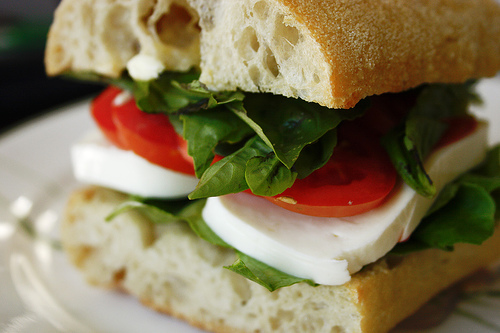

Easy Eatz! Recipes !

Basil, Mozzarella and Tomato Sandwich
15 minutes| 365 cal|
This delicious sandwich is flavorfull and easy to make. Definitely for those who love mozzarella.
Ciabatta bread
1 tablespoon extra virgin olive oil
4 ounces sliced fresh mozzarella
thin tomato slices (enough for your bread and depeding on your taste)
salt and freshly ground pepper
8 large basil leaves
Pesto can be used instead of Basil or you can use them together

Instructions:
Preheat the Ciabatta bread in the oven. After heating up the bread to perfection lightly brush one side of each slice of bread with olive oil. Layer the mozzarella cheese and the tomato. Season lightly with salt and pepper the amount is up to you. Add the basil leaves over the tomato. Top with the other bread slice oiled side down. Re-heat in the oven or microwave(2 minutes). The cheese shpuld be semi melted and it's ready to serve